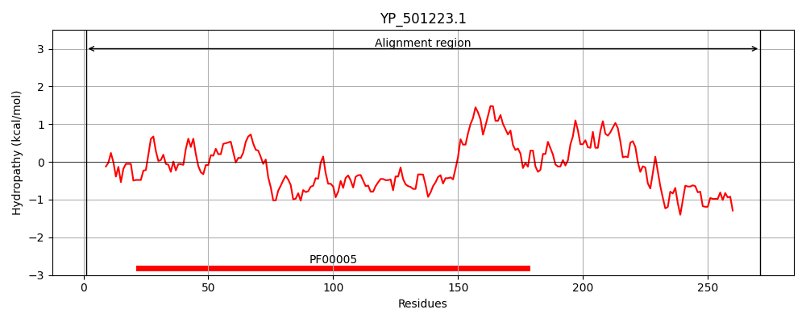
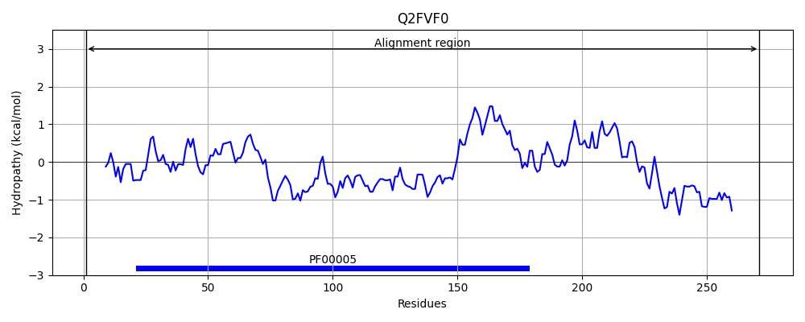
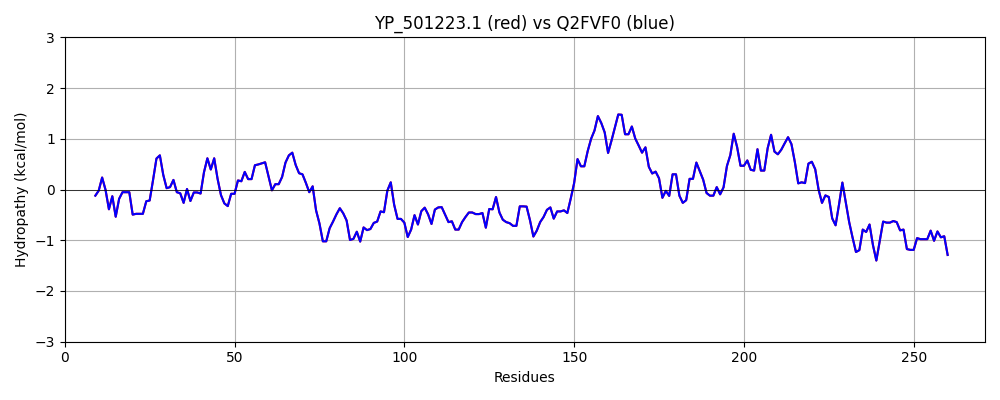

Hit Accession: Q2FVF0
Hit TCID: 3.A.1.5.43
Hit Description: gnl|BL_ORD_ID|13230 gnl|TC-DB|Q2FVF0|3.A.1.5.43 Peptide ABC transporter, ATP-binding protein, putative OS=Staphylococcus aureus (strain NCTC 8325) GN=SAOUHSC_02764 PE=4 SV=1
Mach Len: 271
e:0.000000
Query TMS Count : 0
Hit TMS Count: 0
TMS-Overlap Score: 0.000000
Predicted Substrates:None
BLAST Alignment:
Score: 1381 , Bit scores: 536 bits, E-value: 0.0e+00, Alignment length: 271, Percentage identity: 100
Query: 1 MTLLTVKHLTITDTWTDQPLVSDVNFTLTKGETLGVIGESGSGKSITCKSIIGLNPERLGVTGEIIFDGTSMLSLSESQLKKYRGKDIAMVMQQGSRAFDPSTTVGKQMFETMKVHTSMSTQEIEKTLIEYMDYLSLKDPKRILKSYPYMLSGGMLQRLMIALALALKPKLIIADEPTTALDTITQYDVLEAFIDIKKHFDCAMIFISHDLTVINKIADRVVVMKNGQLIEQGTRESVLHHPEHVYTKYLLSTKKKINDHFKHVMRGDVHD 271
MTLLTVKHLTITDTWTDQPLVSDVNFTLTKGETLGVIGESGSGKSITCKSIIGLNPERLGVTGEIIFDGTSMLSLSESQLKKYRGKDIAMVMQQGSRAFDPSTTVGKQMFETMKVHTSMSTQEIEKTLIEYMDYLSLKDPKRILKSYPYMLSGGMLQRLMIALALALKPKLIIADEPTTALDTITQYDVLEAFIDIKKHFDCAMIFISHDLTVINKIADRVVVMKNGQLIEQGTRESVLHHPEHVYTKYLLSTKKKINDHFKHVMRGDVHD
Sbjct: 1 MTLLTVKHLTITDTWTDQPLVSDVNFTLTKGETLGVIGESGSGKSITCKSIIGLNPERLGVTGEIIFDGTSMLSLSESQLKKYRGKDIAMVMQQGSRAFDPSTTVGKQMFETMKVHTSMSTQEIEKTLIEYMDYLSLKDPKRILKSYPYMLSGGMLQRLMIALALALKPKLIIADEPTTALDTITQYDVLEAFIDIKKHFDCAMIFISHDLTVINKIADRVVVMKNGQLIEQGTRESVLHHPEHVYTKYLLSTKKKINDHFKHVMRGDVHD 271 | Protein Hydropathy Plots: |
|---|
|  |  |
Pairwise Alignment-Hydropathy Plot:
|
|---|
|  |